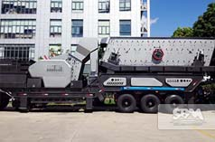
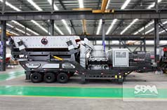
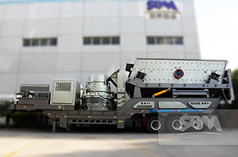

Hydraulic Driven Track Mobile Plant
Hydraulic driven track mobile plant name is tracked drive mobile crusher station, mainly used in metallurgy, chemical industry, building materials, materials processing, such as hydropower often require the removal operation, especially for the liquidity of highway, railway, hydropower engineering stone and other operations. The user can according to the different raw materials, different scale and product materials, using a variety of configuration. The track mobile crushing station more applied to the construction in city demolition waste treatment project. Construction waste crushing and screening recycled aggregates of several different size and rules can achieve reuse of construction waste recycling purposes.
Wconomic Benefits Of Hydraulic Driven Track Mobile Plant
Hydraulic driven track mobile plant adopts full hydraulic automatic driving mode. Chassis adopts crawler type all steel hull structure, has the advantages of high strength, ground than low, through the characteristics of good, at the same time walking does not damage the road surface in highway. It has very strong applicability to various environment, can move fast on the road, can also be used in the mountains, wetlands, and even can realize climbing operation. Its light weight, small volume, especially suitable for working in narrow, complex environment.
This integration of group operation mode of production, the scene can be the first line of material crushing, exempted materials transported off site to crushing, processing of intermediate links, greatly reduced the material transport costs, equipment is an economic, efficient production. The future, track mobile crusher opportunities to more powerful show in the world, with its unique superiority in mining industry occupation.
Technical Data
Crawler Type Mobile Cone Crusher/Screeing plant:
| Model Parameter | YG935E69 | YG1138E71L | YG1138EW86L | YG1138FW1315ⅡL |
|---|---|---|---|---|
| Feeder Model | GZD960×3500 | GZD1100×3800 | GZD1100×3800 | GZD1100×3800 |
| crusher Model | PE600X900 | PE750X1060 | PEW860 | PFW-1315II |
| Main belt Model | B800X8.5M | B1000X9M | B1000X9M | B1000X9M |
| Side of the belt conveyor Model | B450X3M | B500X3.5M | B500X3.5M | B500X3.5M |
| Power（kw） | 180 | 250 | 200 | 300 |
| TransportationDimension（mm） (L×W×H) | 11900×3100×3650 | 11900×3100×3650 | 13300×3100×4500 | 13300×3100×4500 |
| Jobs Dimension（mm） (L×W×H) | 12100×3100×4100 | 12100×3100×4100 | 13500×3100×5100 | 13500×3100×4800 |
Crawler Type Mobile Cone Crusher/Screeing plant:
| Model Parameter | YCS160L | YHP220L | 3YZS1548AL | 3YZS1848AL | 3YZS1860AL | 3YZS1548BL | 3YZS1848BL | 3YZS1860BL |
|---|---|---|---|---|---|---|---|---|
| Equipment Model | Cs160 | HPC220 | 3YZS1548 | 3YZS1848 | 3YZS1860 | 3YZS1548 | 3YZS1848 | 3YZS1860 |
| Belt feeder Model | GLD-12×4/15 | GLD-12×4/15 | ||||||
| Feeding conveyor | B1000×4M | B1000×4M | B1200×4.5M | B1200×3M | B1200×3M | B1200×3M | ||
| Main belt Model | B1000X9M | B1000X9M | B800X9M | B1000×5M | B1000×5M | B1000×8M | B1200×8M | B1200×9M |
| Belt conveyor under the screen | B800×4.5M | B1000×4.5M | B1000×5.5M | B1000×7M | B1000×7M | B1000×8M | ||
| The left discharging belt conveyor | B500×7.3M | B500×7.3M | B500×7.3M | B500×7.3M | B500×7.3M | B500×7.3M | ||
| The right discharging belt conveyor1 | B500×7.3M | B500×7.3M | B500×7.3M | B500×7.3M | B500×7.3M | B500×7.3M | ||
| The right discharging belt conveyor2 | B500×7.3M | B500×7.3M | B500×7.3M | B500×7.3M | B500×7.3M | B500×7.3M | ||
| Power（kw） | 270KW | 330KW | 120KW | 120KW | 120KW | 120KW | 120KW | 120KW |
| TransportationDimension（mm） (L×W×H) | 12000× 3240 ×3700 |
12500× 3240 ×3900 |
12500× 3240×3900 |
13500× 3300 ×3900 |
13500× 3300 ×3900 |
12500× 3240 ×3900 |
13500× 3300 ×3900 |
13500× 3300 ×3900 |
| Received a high degree of material | 2900 | 3100 | 3100 | 2400 | 2400 |
Related Products
|  Mobile Impact Crusher |
 Mobile Cone Crusher |
 K Portable Crusher |